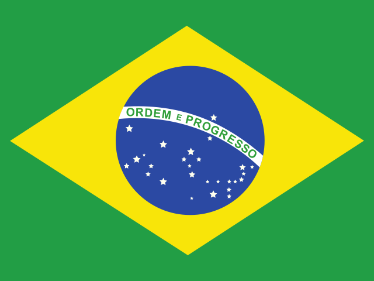

N° 1Jeudi 5 novembre 2026Mise à jour à 13 h 30
Au lendemain des midterms, l’Amérique sanctionne la guerre en Iran
Les démocrates reprennent le Congrès et Donald Trump admet le poids du conflit avec Téhéran dans sa défaite. Au Moyen-Orient, la médiation qatarie tente d’empêcher une reprise des hostilités, tandis qu’en Ukraine la Russie s’en prend au réseau électrique avant des pourparlers prévus le 10 novembre.
Rédigé par une IA à partir des sources citées · Comment c’est fait
Les cinq sujets du jour
-
1
Midterms : les démocrates reprennent le Congrès, Trump paie le prix de la guerre en Iran Au terme d’une soirée électorale historique, l’opposition s’empare de la Chambre des représentants et du Sénat. Le président américain reconnaît que le conflit avec Téhéran a largement pesé sur le scrutin. États-Unis
États-Unis -
2
Entre Washington et Téhéran, la crainte d’une reprise de la guerre après le scrutin Le Qatar s’efforce d’arracher un accord intérimaire avant que les États-Unis ne relancent leurs frappes. Huit mois après le début du conflit, le détroit d’Ormuz reste quasi fermé et le baril dépasse les 100 dollars. Iran
Iran -
3
En Ukraine, la Russie s’en prend au réseau électrique avant de nouveaux pourparlers À l’approche de l’hiver, Moscou multiplie les attaques contre les infrastructures énergétiques. Des délégations ukrainienne, russe et américaine doivent se retrouver les 10 et 11 novembre à Abou Dhabi. Ukraine
Ukraine -
4
Israël sans majorité après les législatives, Gaza toujours sous le feu Ni le bloc de Benyamin Nétanyahou ni l’opposition emmenée par Gadi Eisenkot n’atteignent la barre des 61 sièges. À Gaza, un an après le cessez-le-feu, les frappes israéliennes font encore des victimes presque chaque jour. Israël
Israël -
5
Au Soudan, la guerre des drones étrangle les civils Plus de trois ans après le début du conflit, les paramilitaires des Forces de soutien rapide multiplient les frappes contre les infrastructures. La crise déborde désormais sur l’Éthiopie voisine. SoudanLoin des caméras
SoudanLoin des caméras
En bref
- IndonésieTrois hauts gradés de la police, dont l’ancien chef de la police nationale devenu chef de cabinet du président, ont été arrêtés pour des écoutes illégales visant notamment Prabowo Subianto ; l’armée a déployé près de 21 000 hommes à Jakarta. Source

BrésilRéélu le 25 octobre avec un peu plus de 51 % des voix, Luiz Inácio Lula da Silva entame un quatrième mandat, contesté par son adversaire, Flávio Bolsonaro, qui réclame l’annulation du scrutin. Source HongrieLe gouvernement de Péter Magyar a rendu publics, le 4 novembre, date anniversaire de l’écrasement de l’insurrection de 1956, les noms de quelque 50 000 informateurs de la police politique communiste. Source
HongrieLe gouvernement de Péter Magyar a rendu publics, le 4 novembre, date anniversaire de l’écrasement de l’insurrection de 1956, les noms de quelque 50 000 informateurs de la police politique communiste. Source- FranceJournée de grève interprofessionnelle à l’appel de cinq syndicats, sur fond de contestation du budget 2027 et de mobilisation lycéenne. Source
À venir
- Ouverture de la COP31 sur le climat à Antalya, en Turquie.
- Pourparlers entre l’Ukraine, la Russie et les États-Unis à Abou Dhabi.
- Sommet de l’APEC à Shenzhen, rencontre entre Donald Trump et Xi Jinping.
- Élections locales à Taïwan.